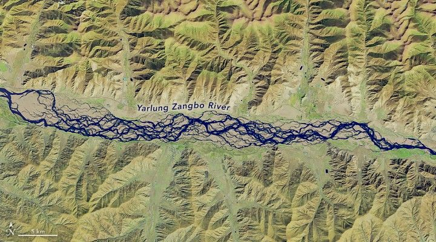

Braided River in Tibet Redraws Its Channels
As the Yarlung Zangbo River twists through Tibet, it collects world records. It is the planet’s highest-altitude major river, flowing at an average elevation of 4,000 meters (13,000 feet). Along its course, the river passes through the world’s deepest land-based canyon, measuring more than 6,000 meters (20,000 feet) deep—three times that of the Grand Canyon in Arizona.
But the Yarlung Zangbo offers more than a list of superlatives; it is a textbook example of a braided river. And like many braided rivers, it has undergone some visually striking changes in recent decades.
The channels of braided rivers shift substantially from year to year due to high sediment discharge from nearby steep mountains, according to Zoltán Sylvester, a research professor at the University of Texas at Austin. Flooding events frequently remobilize the steady accumulation of loose, coarse sediment, preventing vegetation from becoming established on the sandbars.
“This is in contrast with meandering rivers or anabranching rivers, in which sediment accumulations are more stable than the bars of braided rivers,” Sylvester said.
Images spanning nearly four decades reveal the shapeshifting nature of the Yarlung Zangbo River as it flows across the Tibetan Plateau.
NASA Earth Observatory image by Michala Garrison and animations by Ross Walter, using Landsat data from the U.S. Geological Survey. Story by Madeleine Gregory, Landsat Science Office Support.
The images in the animation, spanning from 1988 to 2025, were acquired by Landsat satellites: the TM (Thematic Mapper) on Landsat 5, the OLI (Operational Land Imager) on Landsat 8, and the OLI-2 on Landsat 9. The images are false-color, combining shortwave infrared, near-infrared, and blue light to better distinguish between water and land.
Around 2014, the Zhanang bridge becomes visible as a thin line crossing the river, just left of center in the wide view. This bridge connects the northern and southern parts of Zhanang County, which are separated by the Yarlung Zangbo.
The river’s headwaters originate from the Angsi Glacier in the northern foothills of the Himalayas, west of these images. From there, the river flows west to east, winding its way across the Tibetan Plateau and through the Indus-Yarlung suture zone, where the Indian and Eurasian tectonic plates meet. The collision of these plates is what created the Himalayas, and the region is still seismically active. The Yarlung Zangbo deposits sediment from the Himalayas throughout the region, creating fertile soil that benefits agriculture and ecosystems.
The river then turns sharply south into India, where it becomes the Brahmaputra River. It eventually joins with the Ganges to form the largest river delta in the world before ending its riverine journey in the Indian Ocean.